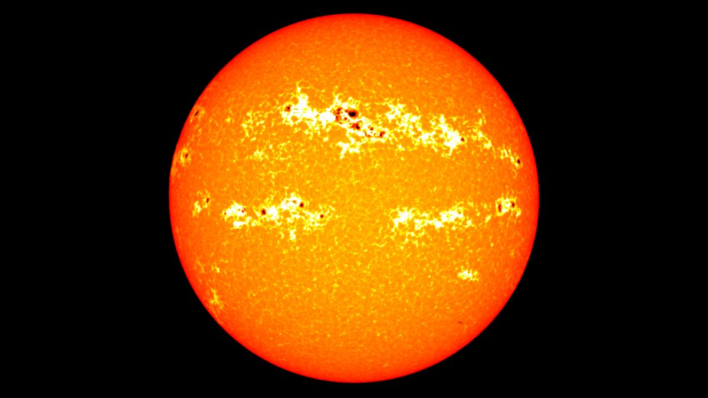
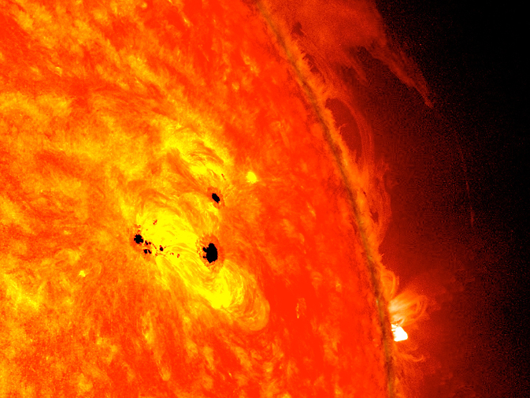

1. Manchas solares
Las manchas solares son regiones del Sol con una temperatura mucho más baja a las que les rodea, pero con una intensa actividad magnética. Su intensidad y frecuencia depende de los ciclos de actividad de la estrella, que en este caso, aumentan y disminuyen en ciclos de 11 años de duración. Cuando se producen estos ciclos la temperatura en La Tierra es más baja. El ciclo más largo fue el de Gleissberg, que duró entre 72 y 83 años y causó el Mínimo de Maunder, que propició una gran bajada de temperaturas en Europa. Los científicos, aún no saben a que se deben estos ciclos de calor y las manchas solares.
 